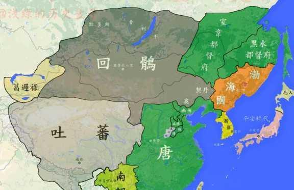
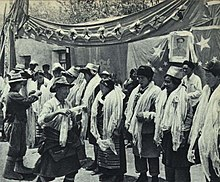

History
生活在青藏高原的藏族人自稱為「博（bod）」。 滿語、蒙語中則稱「博」為「ᡨᡠ᠋ᠪᡝᡨ (tubet, 土伯特)」、 「tübat（圖波特）」。「博」是集民族、地域、政權於一體的總稱
史前時期
主流史學界認為西藏雅魯藏布江流域有舊石器時代到新石器時代衍化的 完整考古證據證明西藏人在18,000年前左右已經有活動的證據。 按照目前考古學上的證據，在距今14,000年和8,000年之間的中石器時代， 就已經有人類開始在西藏居住。

吐蕃帝國
吐蕃王室的始祖崛起於西藏山南地區的雅隆河谷，在松贊干布贊普繼位以前， 據說已傳承20餘世，但松贊干布之前吐蕃並無文字，因此其世系難以考證。 到了7世紀初的時候，由於松贊干布成功的經略，位於今青海玉樹一帶的「松波」 、謙多（今昌都）一帶的「康國」（舊唐書稱「東女國」）、甘孜一帶的「附國」 、理塘一帶的「蕃綠」、居青海的吐谷渾、党氏各小國（即唐史所記「党項」） 等國，統一在吐蕃王朝之下，該王朝也成為當時不可忽視的大國。
